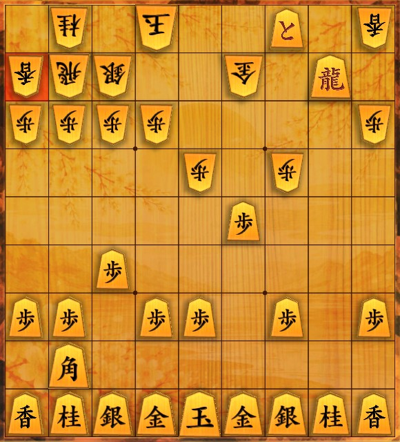
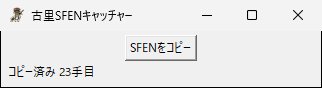

開発記録 / 画像認識 × 将棋
対局を振り返るとき、いま画面に出ている局面を、そのまま検討ソフトに貼りたいと思いました。ボタンを1つ押すと、将棋ゲームの画面を読み取り、局面をSFENの1行にしてコピーするアプリを作りました。

この盤を読み取ると、次の1行がコピーされます。
1n1k2+P1l/lrs2g1+R1/pppp4p/4p1p2/5P3/2P6/PP1PP1P1P/1B7/LNSGKGSNL b BGSN2P 23
盤の外にある持ち駒（先手の角・金・銀・桂と歩2枚）も読み、手番と手数まで含めています。lishogi の盤面入力や棋譜解析に、そのまま貼り付けて使えます。
画面に出ている局面を、手で並べ直さずに検討ソフトへ移したいと考えました。
将棋ゲームで指したあと、感想戦の画面で局面をたどっていると、「この局面を検討ソフトで調べたい」と思うことがあります。そのたびに検討ソフトの盤へ駒を1枚ずつ並べ直すのは手間がかかり、並べ間違いも起きます。
局面を移すには、SFENという書き方を使います。局面を1行の文字で表すもので、多くの検討ソフトが読み込めます。平手の初期局面は次のように書きます。
lnsgkgsnl/1r5b1/ppppppppp/9/9/9/PPPPPPPPP/1B5R1/LNSGKGSNL b - 1
盤を上の段から順に書き、大文字が先手の駒、小文字が後手の駒、数字は空いているマスの数です。そのあとに手番（b が先手、w が後手）、持ち駒（無ければ -）、手数が続きます。
機能は「いま画面に出ている局面のSFENを取る」ことだけに絞りました。対局を最初から記録する機能や、ファイルに保存する機能は付けていません。貼り付ければ用が済むので、ファイルも残しません。
ゲームの画面を撮り、盤・持ち駒・手番・手数を読んで、局面として成り立つかを確かめてからコピーします。

ボタンを押してからコピーされるまでは、次の手順です。
押してからコピーされるまでは、2秒ほどです。
読み違えたまま貼り付けると、違う局面を検討することになります。そこで、コピーする前に次のことを確かめ、ひとつでも合わなければコピーせずに、エラー音とともに理由を表示します。
以下の項目について確認・テストしました。
カーソルや、カーソルを当てたときに光る駒が写ると、読み違えるおそれがあるためです。